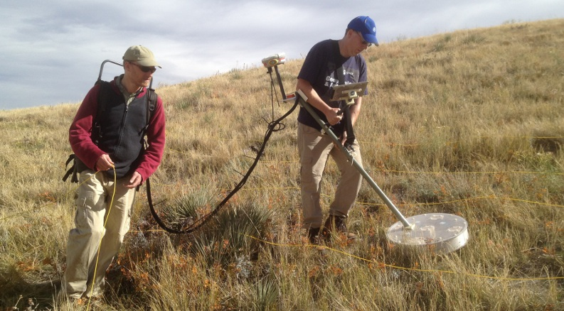
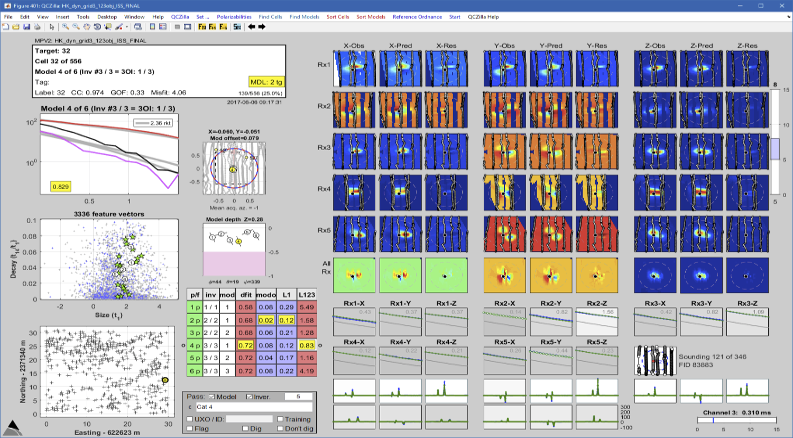
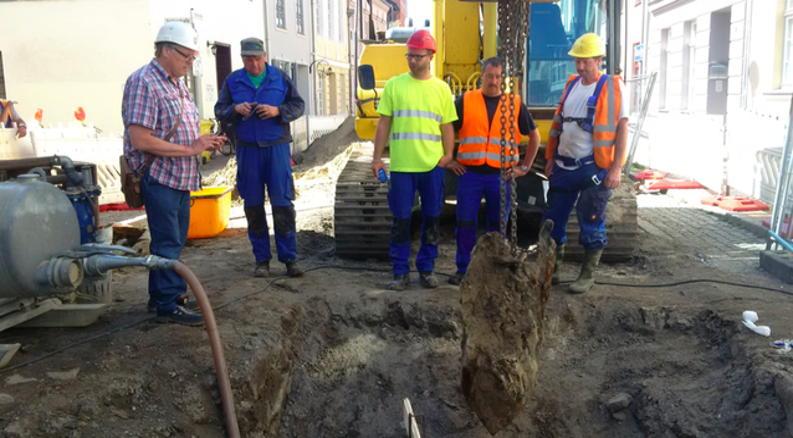
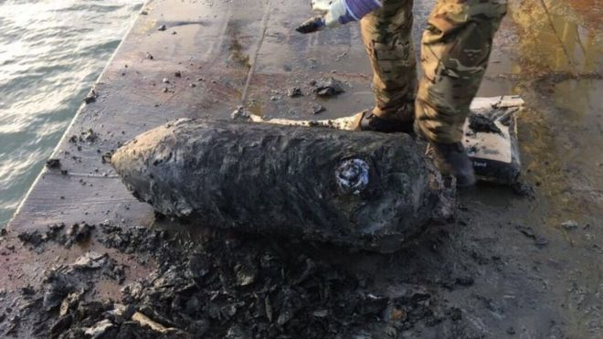

Our team has over 15 years experience collecting and processing geophysical data for munitions response projects. We are an ISO 17025 accredited laboratory under the DoD Advanced Geophysical Classification Accreditation Program (certificate number 4275.01).
In cooperation with GapEOD, we are the providers of the UltraTEM sensor for advanced geophysical classification projects within North America, and we are the developers of BTField acquisition and processing software.
Our goal is to provide clients with industry-leading geophysical data acquisition and processing services. Our services are based on innovative hardware and software technologies that have proven their success in a range of conditions.
The UltraTEM system, developed by Gap Explosive Ordnance Detection in partnership with Black Tusk Geophysics, is a multi-component multi-sensor system that uses time-domain electromagnetic induction (EMI) to detect and characterize buried metal. Highlights of the UltraTEM system include:
Contact us for more information on leasing the UltraTEM for your AGC project.

MPV Data acquisition

Data processing

Borehole classification

Marine classification